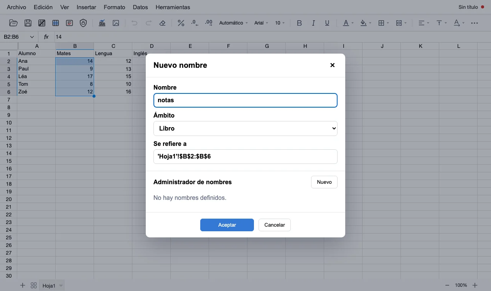

Rangos con nombre
Dar un nombre
- Seleccionar la celda o el rango.
- Clic derecho › Definir nombre… (o la flecha del cuadro de nombres › Administrador de nombres).
- Escribir el nombre, elegir el ámbito, Aceptar.

| Campo | Contenido |
|---|---|
| Nombre | empieza por una letra o _; letras, cifras, _ y ., sin espacio; no una dirección como B2 |
| Ámbito | Libro: se lee desde todas las hojas; una hoja: solo se lee desde ella, donde prevalece sobre un nombre del libro |
| Se refiere a | una celda o un rango, con su hoja: 'Hoja1'!$B$2:$B$6 |
Usar un nombre
=PROMEDIO(notas)
=precio*(1+iva)- La flecha del cuadro de nombres lista los nombres: elegir uno selecciona su rango, en su hoja.
- Cuando la selección es exactamente un rango con nombre, el cuadro de nombres muestra su nombre.
- Una lista desplegable puede leer un rango de celdas, indicado por su dirección.
Modificar, eliminar
En Administrador de nombres, hacer clic en un nombre vuelve a poner sus campos en modificación; Eliminar lo elimina; Nuevo vuelve a un nombre vacío. Antes de eliminar un nombre, sustituir las fórmulas que lo leen: conservan su último valor y después dejan de calcularse.
Los nombres se guardan en el archivo de Excel y se leen de él.